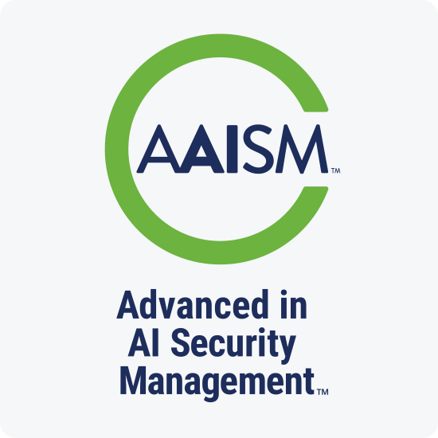
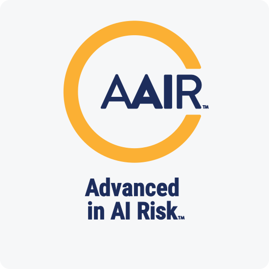
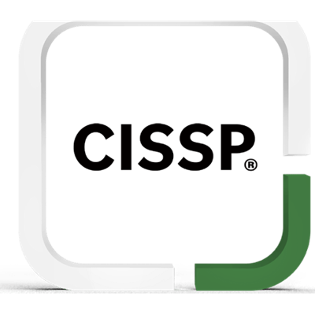
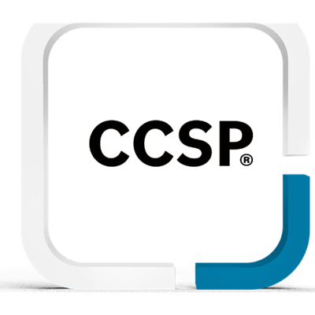
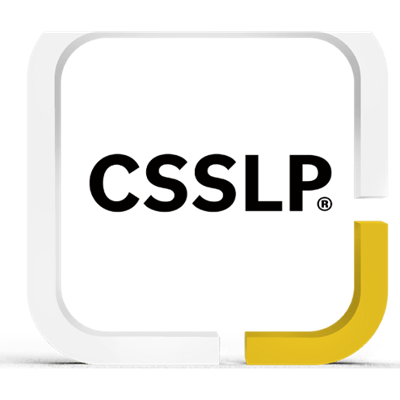
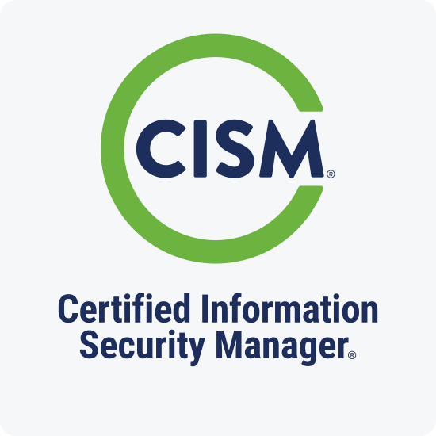
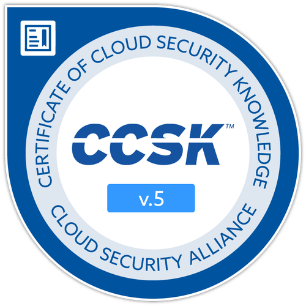
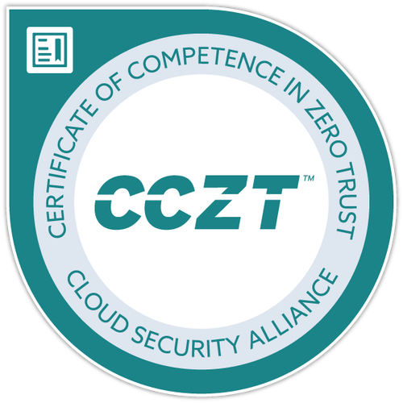

agitru ayuda a pequeñas y medianas empresas a usar la IA con responsabilidad y con confianza — identificamos riesgos ocultos, definimos reglas claras y supervisamos la IA que su equipo usa para que genere valor en lugar de problemas.
La IA puede llevar su negocio al siguiente nivel. Pero si se usa sin cuidado, también puede exponer datos, afectar clientes, violar derechos, ser usada por terceros contra su empresa y crear problemas legales capaces de sacarlo del mercado.
No se puede corregir lo que no se ha identificado. agitru identifica cuáles de estos riesgos aplican a su negocio, los prioriza y entrega una hoja de ruta accionable en 1–2 semanas — para que sepa exactamente dónde enfocarse antes de invertir en remediación.
Agenda una llamada gratis de 30 minutosLos sistemas de IA pueden filtrar datos de sus clientes, dar información incorrecta que sus clientes tomarán como cierta, o desencadenar acciones no autorizadas en herramientas conectadas como correo, CRM o pagos—a menudo por fallas predecibles que son fáciles de detectar y corregir una vez que sabe qué buscar.
Estos no son riesgos teóricos. Aparecen cada semana en empresas reales—incluyendo pequeñas y medianas—y el costo de descubrirlos por las malas crece cada año.
Paquetes de alcance fijo con entregables claros, plazos predecibles y precio cerrado. La mayoría de servicios se entregan en 1–6 semanas. Sin programas de 12 meses, sin sorpresas en la factura, sin sobrecarga empresarial.
La IA de su empresa rara vez es algo que usted construyó. Son los chatbots, copilots y funciones de IA dentro de las herramientas que su equipo ya usa. La probamos tal como usted la usa—incluyendo los riesgos que hereda de cada proveedor.
Cuando un cliente, auditor o regulador pregunte cómo gestiona el riesgo de IA, tendrá una respuesta clara lista: documentación, evidencia y pruebas—sin haber montado un departamento de cumplimiento para producirla.
Cada compromiso es liderado por consultores con experiencia práctica en ciberseguridad e inteligencia artificial—no por analistas que leen manuales. Nuestro equipo ha diseñado y vulnerado sistemas de IA, construido programas de seguridad para industrias reguladas y ayudado a organizaciones a navegar la intersección entre tecnología emergente y riesgo operacional en EE.UU., LATAM y la UE.
Aportamos la misma profundidad de experiencia a un compromiso de dos semanas con una PYME que la que una empresa grande esperaría de un socio senior—sin la sobrecarga, sin el ciclo de ventas y sin el relleno generalista.
Nuestros consultores poseen las credenciales avanzadas de IA de ISACA—entre las primeras certificaciones reconocidas globalmente dedicadas a gestionar la seguridad y el riesgo de la IA. El mismo rigor en el que confían auditores y juntas directivas, aplicado a sus sistemas de IA.

La certificación de ISACA centrada en la gestión de seguridad de IA—gobernanza de IA, supervisión del programa de seguridad y los controles necesarios para proteger sistemas de IA en producción.

La certificación avanzada de ISACA en riesgo de IA—identificar, evaluar y gobernar el riesgo de IA a lo largo del ciclo de vida, alineada con marcos reconocidos como el NIST AI RMF.
Respaldados por sólidas credenciales de ciberseguridad






AAISM™ y AAIR™ son marcas de ISACA. Todas las marcas de certificación pertenecen a sus respectivos propietarios—ISACA, ISC2 y Cloud Security Alliance—e identifican a profesionales certificados individuales del equipo de agitru.
Cada paquete tiene alcance fijo, precio cerrado y entregables claros. Elija el que se ajuste a la etapa actual de su negocio—puede sumar más a medida que crece.
Ideal si aún no ha realizado una revisión estructurada de riesgo de IA, o quiere un panorama consolidado antes de invertir en programas específicos.
Evaluación de Postura de IA Segura y Responsable
Ideal para PYMEs que aún no han realizado una revisión estructurada de riesgo de IA—o que quieren tener un panorama consolidado antes de invertir en programas específicos. Mapea tu estado actual en ambas dimensiones: seguridad y gobernanza, y calibra las brechas frente a los estándares y requisitos de mercado que aplican a tu contexto: NIST AI RMF, OWASP GenAI, ISO 42001 y Ley de IA de la UE.
Ya usa IA en su negocio. Identificamos las brechas de seguridad antes de que sus clientes, atacantes o reguladores lo hagan.
QuickScan de Seguridad IA para Apps LLM y Agentes
Ideal para PYMEs que pilotean o ya usan IA generativa—chatbots, búsqueda RAG, automatización de soporte al cliente, flujos de trabajo agénticos. Base: OWASP Top 10 para LLMs y IA Agéntica + resultados MAP/MEASURE del AI RMF.
Sprint de Red Team para LLMs y Agentes
Ideal para PYMEs con uso real en producción, IA orientada al cliente, o IA conectada a herramientas como email, CRM, ticketing, código y flujos de trabajo. Alineado al Top 10 de OWASP para IA Agéntica y la guía de red teaming GenAI del NIST.
Puerta de Ingreso para Modelos de Código Abierto
Ideal para PYMEs que descargan modelos de hubs públicos, hacen fine-tuning o embeben modelos abiertos en productos. Los artefactos de modelos inseguros pueden habilitar ejecución arbitraria de código—los controles de ingreso importan.
Reglas claras, políticas internas y evidencia lista para auditoría—sin burocracia.
Kit Inicial de IA Responsable para PYMEs
Ideal para PYMEs que necesitan gobernanza sin burocracia—especialmente cuando los clientes preguntan “¿cómo gestionas el riesgo de IA?” Anclado en los resultados GOBERNAR del AI RMF.
Acelerador de Preparación ISO 42001 y Ley de IA de la UE
Ideal para PYMEs que venden a la UE, trabajan con clientes empresariales o se preparan para requisitos de adquisición/auditoría. Documentación ISO 42001 + Ley de IA de la UE, registro y controles de ciberseguridad.
La IA cambia constantemente. Vigilamos, asesoramos y actualizamos sus protecciones para que no queden obsoletas.
Evaluaciones Continuas de IA y AI SecOps Ligero
Ideal para PYMEs que quieren protección continua después del go-live sin construir un equipo dedicado de seguridad de IA. El AI RMF enfatiza la gestión de riesgos como un proceso continuo a lo largo del ciclo de vida.
CAIO Virtual y Apoyo al Comité de Dirección de IA
Ideal para PYMEs que necesitan liderazgo senior en IA sin contratar a tiempo completo. Un Chief AI Officer fraccional o miembro externo del comité integrado en tu estructura de gobernanza—aportando experiencia en NIST AI RMF, supervisión de proveedores y dirección estratégica a tiempo parcial.
Un flujo de compromiso de inicio rápido diseñado para PYMEs que necesitan avanzar rápido sin tomar atajos.
Mapeamos rápidamente tus casos de uso de IA, dónde viven los datos sensibles y si las herramientas o agentes pueden tomar acciones. Sin costo, sin presión.
GratisRecibes un paquete claro, plazos, entregables y requisitos de acceso. En 2 días hábiles.
2 días hábilesRecibes artefactos accionables—suite de pruebas, hoja de ruta, paquete inicial de evidencia—y un resumen ejecutivo para que puedas implementar de inmediato.
Artefactos accionablesAgenda una llamada de alcance gratuita de 30 minutos con un consultor principal. Mapearemos tu panorama de riesgo de IA y recomendaremos el punto de partida adecuado.
Regiones de servicio: Estados Unidos (entrega desde EE.UU.), América Latina (remoto + soporte de partners) y soporte de preparación orientado a la UE.